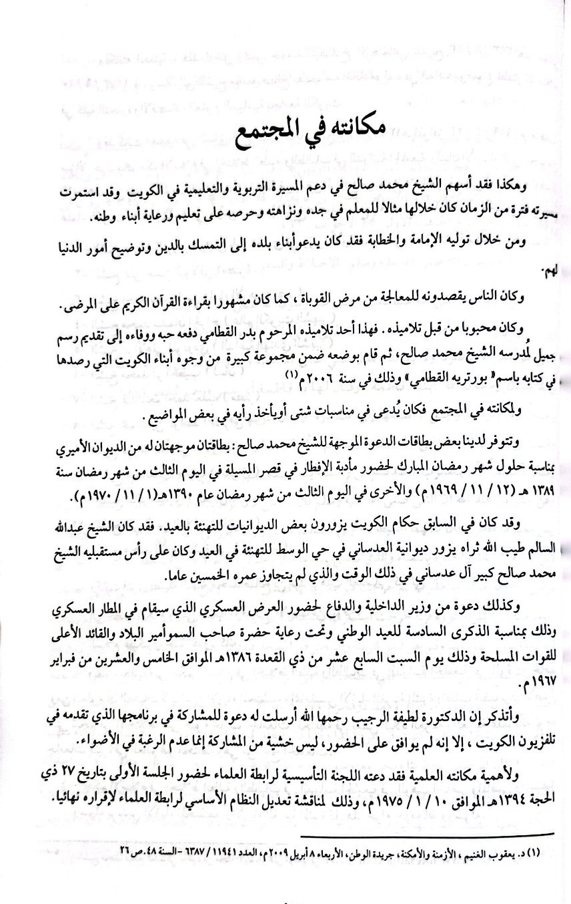

Published book · Book pages, by Aisha bint Mohammed Saleh bin Abdulwahab Al-Adsani
Sheikh Mohammed Saleh bin Abdulwahab Al-Adsani: Bader Abdulwahab Al-Qatami’s portrait of his teacher
What it is
A biography of the teacher and imam Sheikh Mohammed Saleh Al-Adsani. In the chapter «His standing in society» the author writes that one of his students, «the late Bader Al-Qatami», out of love and loyalty drew a fine portrait of his teacher and placed it among the leading figures of Kuwait in his book «Portrait Al-Qatami», 2006 (citing Dr Yacoub Al-Ghunaim, Al-Watan, 8 April 2009). Pages 82 and 83 list his students; page 83 names «Al-Sayyid Bader Al-Qatami» and «Al-Sayyid Mohammed Al-Qatami».
Why it matters
Records Bader Al-Qatami as a portrait artist and the author of «Portrait Al-Qatami» (2006).
Who is meant
The family confirms that the only Bader and Mohammed Al-Qatami of that generation are Bader Abdulwahab Al-Qatami and Mohammed Abdulaziz Al-Qatami.
Page copies


Notes
Only the first pages are shown here. Family members who sign in can see all 4 pages.
Others named
Sources
Aisha bint Mohammed Saleh bin Abdulwahab Al-Adsani, Al-Sheikh Mohammed Saleh bin Abdulwahab Al-Adsani laqaban wal-Aqeel nasaban, pages 82 and 83 and the chapter «Makanatuhu fil-Mujtama‘»
How this text was made: Photographed from the printed pages.
Open in the interactive site